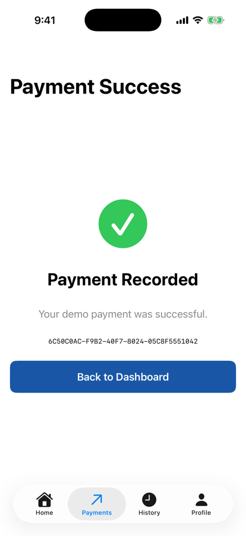
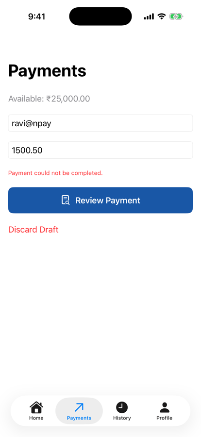

Unit 04 · Lesson 4.4
Make the payment feature independent of how payments happen: demo today, a mock in tests, an API tomorrow.
Lesson 4.4 · Outcomes
Define dependency injection, and dependency inversion
Design a service contract for payments
Swap implementations without touching the ViewModel
Test success and failure with a mock
Assemble objects in a composition root
Match each dependency’s lifetime to its job
Lesson 4.4 · Where we are
Unit 04 · Application Architecture & MVVM
Part 1
One ViewModel, many implementations
Part 1 · Understand the problem (section 1)
private let store: NPayStore
init(store: NPayStore) { self.store = store }Part 1 · What is dependency injection? (section 2)
final class PaymentViewModel {
private let service = DemoPaymentService()
}final class PaymentViewModel {
private let service: PaymentService
init(service: PaymentService) {
self.service = service
}
}Part 2
PaymentService, then DemoPaymentService
Part 2 · Our first dependency contract (section 3)
struct PaymentRequest {
let recipient: String
let amountPaise: Int
}
struct PaymentReceipt {
let transactionID: UUID
let recipient: String
let amountPaise: Int
}
@MainActor
protocol PaymentService {
func send(_ request: PaymentRequest) async throws
-> PaymentReceipt
}Part 2 · The demo implementation (section 4)
enum PaymentServiceError: Error {
case rejected
}
@MainActor
final class DemoPaymentService: PaymentService {
private let store: NPayStore
init(store: NPayStore) {
self.store = store
}
func send(
_ request: PaymentRequest
) async throws -> PaymentReceipt {
guard let id = store.recordDemoPayment(
recipient: request.recipient,
amountPaise: request.amountPaise
) else {
throw PaymentServiceError.rejected
}
return PaymentReceipt(
transactionID: id,
recipient: request.recipient,
amountPaise: request.amountPaise)
}
}recordDemoPayment.rejectedsend ₹1,500.50 → receipt
store: 2,349,950 paise, 4 transactions
Part 3
Who builds it, who depends on it
Part 3 · Who creates whom? (section 5)
Dashed: creation. Solid: code dependency (the ViewModel uses it; the service conforms to it).
Part 3 · Injection versus inversion (section 15)
| What it is | Says | |
|---|---|---|
| Dependency Injection | A technique | Supply dependencies from outside |
| Dependency Inversion Principle | A design principle | Policy and details both depend on abstractions |
init(store: NPayStore) in 4.2Part 4
It knows only PaymentService
Part 4 · Refactor PaymentViewModel (section 6)
private let service: any PaymentService // init(service:)
func submit() async -> PaymentReceipt? {
guard !isSubmitting else { return nil }
let trimmed = recipient.trimmingCharacters(
in: .whitespacesAndNewlines)
guard let amount = Money.parsePaise(amountText),
amount > 0, !trimmed.isEmpty else {
errorMessage = "Check your payment details."
return nil
}
let request = PaymentRequest(recipient: trimmed,
amountPaise: amount)
isSubmitting = true
defer { isSubmitting = false }
do {
let receipt = try await service.send(request)
recipient = ""; amountText = ""; errorMessage = nil
return receipt
} catch {
errorMessage = "Payment could not be completed."
return nil
}
}Part 4 · Why any PaymentService? (sections 7, 16)
private let service: any PaymentService
viewModel’s stored service === the service passed in: true
MemoryLayout<any PaymentService>.size: 40 bytes
MemoryLayout<DemoPaymentService>.size: 8 bytes
Part 5
Control the dependency, test the ViewModel
Part 5 · A mock service, and one call three ways (sections 8–9)
@MainActor
final class MockPaymentService: PaymentService {
var shouldFail = false
private(set) var requests: [PaymentRequest] = []
func send(
_ request: PaymentRequest
) async throws -> PaymentReceipt {
requests.append(request)
if shouldFail {
throw PaymentServiceError.rejected
}
return PaymentReceipt(
transactionID: UUID(),
recipient: request.recipient,
amountPaise: request.amountPaise)
}
}| Injected | Receipt | errorMessage |
|---|---|---|
| Demo | ₹1,500.50 | nil (store 2,349,950) |
| Mock, success | ₹1,500.50 | nil (store untouched) |
| Mock, failure | nil | could not be completed |
| Demo, ₹30,000 | nil | could not be completed |
| Mock, “abc” | nil | check your details (not sent) |
Mac run; the same submit() each time.
Part 5 · Testing without SwiftUI (section 18)
@MainActor
func runPaymentViewModelLab() async {
let mock = MockPaymentService()
let viewModel = PaymentViewModel(service: mock)
viewModel.recipient = "ravi@npay"
viewModel.amountText = "1500.50"
let receipt = await viewModel.submit()
assert(receipt != nil)
assert(mock.requests.count == 1)
assert(mock.requests[0].amountPaise == 150_050)
print("PaymentViewModel test passed")
}PaymentViewModel test passed
Failure-path test passed
receipts 1, requests sent 1
Part 6
Assemble in one place; own deliberately
Part 6 · The composition root (sections 10–11, 19)
@MainActor
enum NPayFactory {
static func makePaymentViewModel(
store: NPayStore
) -> PaymentViewModel {
let service = DemoPaymentService(store: store)
return PaymentViewModel(service: service)
}
}| Constructor injection | Environment injection |
|---|---|
| Passed in the initializer | Supplied through the view hierarchy |
| Explicit at the call site | Convenient for descendants |
| ViewModels, services, repositories | Shared UI context |
| Required dependencies are visible | Needs deliberate setup |
Part 6 · Lifetime and ARC (sections 12, 17)
PaymentViewModel deinit
DemoPaymentService deinit
store still 2,349,950 (the root holds it)
| Lifetime | NPay example |
|---|---|
| Transient | A short-lived validation helper |
| Feature | PaymentViewModel, for a payment workflow |
| Application | NPayStore, NPayRouter, owned by the root |
Part 7
Same screen; three services
Part 7 · Xcode lab, integrated (section 13)
// PaymentsFeatureRoot
_viewModel = State(initialValue:
NPayFactory.makePaymentViewModel(store: store))
// PaymentsScreen: the review sheet's Confirm
PaymentReviewSheet(request: request) {
Task {
pendingSuccessID =
await viewModel.submit()?.transactionID
self.review = nil
}
}| Service | Confirm | Home | Form |
|---|---|---|---|
| Demo | success | ₹23,499.50 + row | cleared |
| Mock, succeeding | success | ₹25,000.00 | cleared |
| Mock, failing | error | ₹25,000.00 | kept |
| Demo, stale review | error | unchanged | kept |
Simulator; the mock is injected through a debug hook in the factory; mock.requests: [ravi@npay 150050].
Part 7 · The same screens, a mock behind them (section 13)

Mock: success screen

Mock: failure, draft kept
Part 7 · Useful boundaries; NPay after 4.4 (sections 20–21)
Lesson 4.4 · Recap
Receive, don’t create
the ViewModel holds any PaymentService
Mocks make tests deterministic
success and failure, no store, no network
A factory assembles; lifetimes match jobs
store app-wide, ViewModel per feature
Review
Check your understanding · 1 of 10
What is dependency injection?
init(service:): the caller chooses.
Common trap: Thinking DI needs a framework.
Check your understanding · 2 of 10
Does dependency injection always require a protocol?
4.2’s init(store: NPayStore) injected a concrete type.
Common trap: A protocol for every class.
Check your understanding · 3 of 10
Why use a MockPaymentService?
shouldFail: a failure on demand.
Common trap: Waiting for real failures to test.
Check your understanding · 4 of 10
Who should create DemoPaymentService?
NPayFactory builds it with the shared store.
Common trap: Scattering construction across views.
Check your understanding · 5 of 10
Should DemoPaymentService create an independent NPayStore?
A second store means a second balance (4.2).
Common trap: Losing the single source of truth.
Check your understanding · 6 of 10
Does dependency injection automatically prevent retain cycles?
No cycle here only because the store doesn’t point back.
Common trap: Assuming a pattern manages memory.
Check your understanding · 7 of 10
What does any PaymentService represent?
And it holds the same object: identity true.
Common trap: Thinking it copies or creates a service.
Check your understanding · 8 of 10
NPay runs with a succeeding MockPaymentService injected. You pay ₹1,500.50 and return to Home. The balance shows…
The mock returns a receipt; it touches no store.
Common trap: Assuming the success screen means money moved.
Check your understanding · 9 of 10
With amountText "abc", await viewModel.submit() sends how many requests to the mock?
The ViewModel stops at parsing: “Check your payment details.”
Common trap: Expecting the service to validate everything.
Check your understanding · 10 of 10
From Lesson 4.3: does @Observable track a ViewModel’s private let service?
Only stored vars get @ObservationTracked; a let never changes.
Common trap: Expecting every property to be observed.
Lesson 4.4 · Where this goes next
| Lesson | Topic | Builds on today |
|---|---|---|
| 4.5 | Repository pattern | data access behind a protocol, like PaymentService |
| 4.6 | Use cases | SendPaymentUseCase between ViewModel and service |
| 4.9 | Architecture testing | today’s asserts become a test suite |
| Unit 5 | Networking | an API implementation of the same contract |
Lesson 4.4 · Lab
Contract, demo, mock, factory.
Lesson 4.4 complete
Next: Lesson 4.5 — Repository Pattern